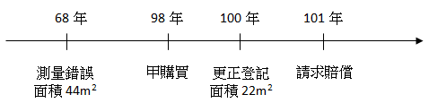

各位同學好
今日專欄以實務案例談談因測量錯誤所致登記錯誤而衍生之損害賠償問題
★案件事實
-
某甲98年1月以總價360萬元向乙購買坐落A地號土地（系爭土地），買賣契約根據土地所有權狀之登記面積為44平方公尺，於98年2月完成所有權移轉登記。
-
惟地政事務所於100年11月以其發現系爭土地登記面積有誤，將系爭土地面積更正登記為22平方公尺，並於101年1月為通知。
-
甲因登記面積更正後減少22平方公尺，受有多支付前手乙價金97萬多元之損害等情，爰依土地法第68條第1項、國家賠償法第2條第2項規定，求為命地政事務所給付上開金額之判決。
★案件事實經過
[圖片1]
★地政事務所抗辯
系爭土地面積登記錯誤，係因68年間辦理分割時圖籍坵塊面積測算謬誤造成，而依地籍測量實施規則規定辦理更正，使土地產權切合實際，並無違法或不當。又系爭土地面積減少之損害，於68年間辦理分割時即發生，且甲於98年2月間買受點交系爭土地時，即知悉系爭土地登記面積與實際面積不符，惟遲至101年5月間始提出賠償請求，顯已罹於國家賠償法第8條第1項規定自損害發生時起算5年或自知有損害時起算2年之時效期間而消滅。
★台灣高等法院判決內容（重點，請筆記）
• 一、甲因系爭土地面積登記錯誤而受有損害：
• (一) 按土地法第68條第1項規定：「因登記錯誤、遺漏或虛偽致受損害者，由該地政機關負損害賠償責任，但該地政機關證明其原因應歸責於受害人時，不在此限」，係就職司土地登記事務之公務員因故意或過失不法侵害人民權利，而該公務員所屬地政機關負損害賠償責任之規定（參照國家賠償法第2條第2項、第9條第1項），核係國家賠償法之特別規定（最高法院98年度第6次民事庭會議決議參照）。
• (二) 查系爭A地號土地於68年間分割時，因圖籍坵塊面積測算謬誤，造成圖簿面積不符，則甲於98年1月依登記面積44平方公尺購得系爭土地，並於98年2月完成所有權移轉登記，然所購得之系爭土地實際面積僅為22平方公尺，乃因地政事務所就圖籍面積計算錯誤而致登記面積錯誤，顯見系爭土地之面積短少，係因地政事務所之過失所致無誤。而按土地登記有絕對效力，且不動產之登記具公信力，而一般不動產買賣均以土地登記簿所載面積作為買賣之範圍及計價之依據，本件甲信任地政事務所掌管之土地登記簿所載面積而計價購買，致甲於購買系爭A地號土地時，本可以較低價格購入而不致有溢付價金之情，卻因地政事務所之過失而以較高價格購入系爭A地號土地，致受有溢付價金之損害，該損害與地政事務所所屬地政人員面積計算錯誤間有相當因果關係。再上開溢付之價金既已實際繳付，甲之財產已經減少，自係受有實際之損害，是確因地政事務所該登記錯誤致甲受有損害。
• 二、地政事務所應就甲之損害負賠償責任：
• (一) 「按土地法第68條立法意旨，在保護土地權利人，故因土地分割測量時，面積計算錯誤而生之登記錯誤，亦應在該法條所稱登記錯誤之列。系爭土地於地政事務所辦理分割測量時，誤登記其面積....致增加給付之損害，自屬有據」。
• (二) 按土地法第68條第1項之規定，其構成要件僅須因(1)行政機關所屬之公務員有故意或過失之行為致有登載錯誤；(2)受有損害之人非有可歸責於己之事由；(3)有實際損害之發生；(4)損害之發生原因與行政機關所屬公務員登載錯誤間有因果關係，即足認定有土地法第68條第1項之要件該當，並未限制受有損害之人需向其前手即原出賣人(即乙)請求返還溢付價金而未果後，始得向該錯誤原登記之行政機關請求賠償。查本件因地政事務所於辦理分割登記時，將系爭A地號土地之面積計算錯誤，致登記面積較實際面積為大，甲已依原錯誤登記面積計付價款，致使甲已受有溢付價金之實際損害。…甲並非地政專業人士，依法亦未規定買賣土地時須先鑑界及測量土地實際面積大小，難期甲於購地前應先調閱地籍圖並自行比對地籍圖坵塊之形狀及估算圖籍之面積是否與實際受點交土地之形狀及面積相符。
• 三、甲之損害賠償請求權，並未罹於時效：
• (一) 按土地法第68條係國家賠償法之特別規定，惟土地法就該賠償請求權未規定其消滅時效期間，應依國家賠償法第8條第1項：「賠償請求權，自請求權人知有損害時起，因2年間不行使而消滅；自損害發生時起，逾5年者亦同」之規定，據以判斷損害賠償請求權是否已罹於時效而消滅（最高法院98年度第6次民事庭會議決議參照）。…次按「國家賠償法第8條第1項規定，賠償請求權，自請求權人知有損害時起，因2年間不行使而消滅。所稱知有損害，須知有損害事實及國家賠償責任之原因事實，國家賠償法施行細則第3條之1定有明文。而所謂知有國家賠償責任之原因事實，指知悉所受損害，係由於公務員於執行職務行使公權力時，因故意或過失不法行為，或怠於執行職務，或由於公有公共設施因設置或管理有欠缺所致而言。於人民因違法之行政處分而受損害之情形，賠償請求權之消滅時效，應以請求權人實際知悉損害及其損害係由於違法之行政處分所致時起算。」最高法院96年度台上字第1926號判決意旨採相同見解。
• (二) 查系爭A地號土地固於68年間分割時即因圖籍坵塊面積測算謬誤，造成圖簿面積不符之情形，惟斯時甲尚未取得系爭土地之所有權，無從就系爭土地為任何處分或使用收益之行為，自難認甲於斯時即受有損害。本件甲所受之損害，應為其於98年1月因誤信錯誤之登記面積購買系爭土地，並於98年2月完成所有權移轉登記而溢付土地價金，則甲損害發生之時，當係其為系爭土地買賣之時。最高法院100年度台上字第293號判決意旨同此見解。準此，甲於101年6月提起本件訴訟，尚未罹於前揭規定自甲所受損害發生時起之5年時效期間，洵屬明確。
曾老師提醒重點
-
測量錯誤導致受有損害，除可容許誤差範圍內，現在通說認為是要賠償的。
-
登記錯誤與損害發生時點未必相同（本案錯誤發生於68年測量時，損害則發生於98年交易時）
-
損害發生於國家賠償法施行後，即依國賠法規定計算時效。（施行前則依民法，請參上課講義）
-
土地法並未限制受有損害人需向原出賣人請求返還溢付價金而未果後，始得向地政事務所請求賠償。
資源來源：臺灣高等法院民事判決102年度上國易字第8號
讀完試著自己作答，再點進去對答案。依文字相似度自動比對，不一定完全對應。
另有 4 題相近，可從題目頁的「延伸閱讀」找到本文。
